Kmbox Net 連接教學
共享指南索引: README.md
目標
在 CVM 中使用 Kmbox Net 網絡程控鍵鼠控制器。Kmbox Net 是一款通過網絡通信的鍵鼠控制設備，具有速度快、穩定性強、安全性高等特點。
什麼是 Kmbox Net
Kmbox Net 是一款網絡程控鍵鼠控制器，具有以下特性：
- 安全性高：協議不公開，每個盒子獨立 IP、端口、硬件編碼，採用阻塞 socket 通信，無法被掃描
- 穩定性強：不會像串口通信那樣白屏重啟
- 速度快：100M 專用網絡，通信速度是原來 B 板的 100 倍，每秒調用次數接近 1000 次
- 自動默認人工軌跡：不會出現鍵鼠數據異常
- 無需適配鼠標：通用性強
- 支持監控物理鍵鼠：屏蔽物理鍵鼠功能，方便寫軟件
- 支持物理鍵鼠學習複製功能：支持驅動直通模式
重要說明： - Kmbox Net 只是相對 Kmbox B 的硬體性能較強 - 但是以 API 來說，串口的 API 比 Kmbox Net 好
技術資訊： - Kmbox Net 的 8K 版本底層代碼基於 Cherry USB
前置條件
- Kmbox Net 盒子一個
- 藍色線纜兩條（USB 線）
- Windows 10 或 11 系統
- 兩台電腦（單機模式可接同一台電腦）
連接步驟
01 開箱介紹
Kmbox Net 默認包含以下配件：
- Kmbox Net 盒子一個
- 藍色線纜兩條
02 如何接線
盒子背面有接口名稱，一般按照下圖接線：
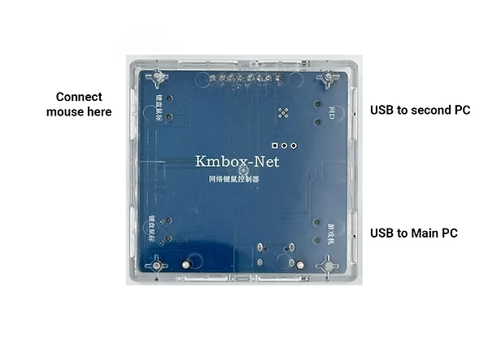
- 遊戲機接口（1）：接目標電腦（被控制的電腦）
- 網口（2）：接控制電腦（運行 CVM 的電腦）
注意： - 如果是單機模式，那麼網口和遊戲機口都接同一台電腦 - 如果是 B 電腦控 A 電腦，那麼遊戲機接口（1）接 A 電腦，網口（2）接 B 電腦
連接完成後，Kmbox Net 屏幕應該顯示如下圖：
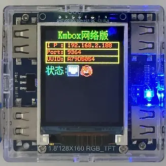
03 安裝網卡驅動（接網口的電腦裝驅動）
- 將網口 USB 線連接到控制電腦（第二台電腦）
- 在第二台電腦上，以管理員身份運行
2. WCHUSBNIC驅動安裝程序
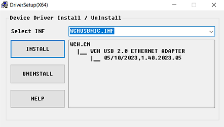
- 選擇
INSTALL進行安裝
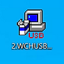
- 安裝成功後，您應該看到 "Driver Install Success!" 提示
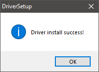
- 重啟第二台電腦
下載網卡驅動：點我下載網卡驅動
注意事項： - 網口 USB 線接在哪裡，哪裡就裝網卡驅動 - 不要驅動裝了電腦 A，線接在電腦 B 上 - 若裝上網卡驅動沒反應： - 查看網口線接上沒有？ - 確認驅動安裝在正確的電腦上 - 確認以管理員身份運行驅動安裝程序
04 修改網卡 IP（接網口的電腦改網卡 IP）
重要：確保主電腦和第二台電腦連接到同一個本地網絡（例如，您的家庭 Wi-Fi）
打開控制面板 → 網絡共享中心
- 在第二台電腦上打開控制面板
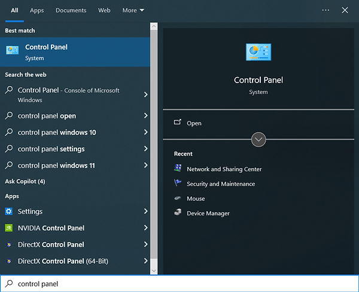
- 點擊「網絡和 Internet」
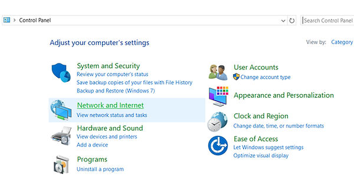
- 點擊「網絡和共享中心」
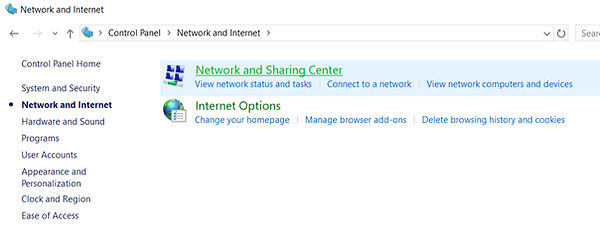
- 點擊「更改適配器設置」
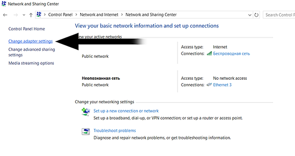
修改網卡 IP
- 找到「USB 2.0 以太網適配器」或類似的網卡設備（這是盒子的網卡）
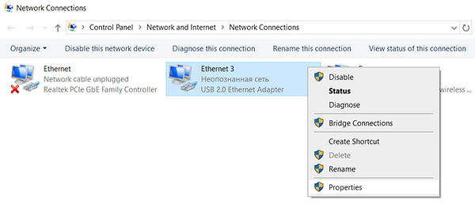
如果看不到此設備，請斷開並重新連接 Kmbox 到第二台電腦的 USB 線。
-
右鍵點擊該網卡，選擇「屬性」
-
確保「Internet 協議版本 6 (TCP/IPv6)」已禁用
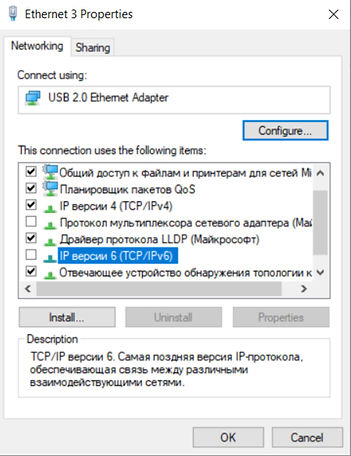
- 確保「Internet 協議版本 4 (TCP/IPv4)」已啟用，點擊它並選擇「屬性」

- 選擇「使用下面的 IP 地址」
- 設置 IP 地址為：
192.168.2.100 - 子網掩碼：
255.255.255.0 - 其他欄位留空
- 點擊「確定」保存
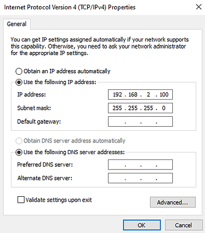
重要提示：
- 要改盒子的網卡，而不是你自己的本機網卡
- 通常頁面上會新出現網卡（盒子的網卡），要改盒子的網卡
- 如果改完 IP 突然沒網了，可能是改錯了網卡
- 如果上述 IP 地址不工作，可以嘗試使用：192.168.2.189
檢查網絡是否連通
- 打開命令提示符（CMD）
- 執行
ping 192.168.2.1（盒子的默認 IP） - 如果能夠 ping 通，說明連接成功
CVM 配置步驟
首次連接
- 打開 CVM 的
General標籤頁 - 將
Input API設置為NET或對應的網絡模式 - 首次啟動時，您需要輸入 Kmbox Net 的數據（IP、端口、UUID）
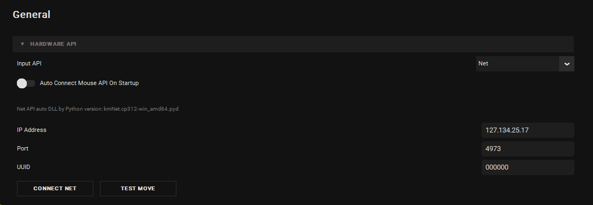
保存配置
為了避免每次都要輸入 Kmbox Net 數據，請：
- 在 CVM 中進入配置（config）部分
- 選擇任意配置並點擊保存
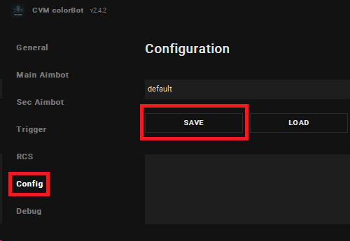
這樣設置就會被保存，下次啟動時會自動使用。
建議起始值
Input API:NETIP 地址:192.168.2.1端口: 根據盒子實際端口設置（通常為默認值）auto_connect_mouse_api: 首次設置為false，穩定後改為true
驗證清單
- CVM 可以連接到 Kmbox Net 且無超時報錯
- 微動測試平滑，方向正確
- 重啟 CVM 後可用同一配置再次連接
- 網絡 ping 測試成功
故障排查
無法連接
- 檢查網口線是否正確連接
- 確認網卡驅動已正確安裝在接網口的電腦上
- 確認 IP 地址設置正確（
192.168.2.100） - 確認盒子的 IP 地址（通常為
192.168.2.1） - 檢查防火牆是否阻止了連接
- 確認兩台電腦在同一網絡（單機模式除外）
裝上網卡驅動還是沒反應
- 查看網口線接上沒有？
- 網口 USB 線接在哪裡，哪裡就裝網卡驅動
- 不要驅動裝了電腦 A，線接在電腦 B 上
改完 IP 為什麼突然沒網了
- 如果沒網了，可能是改錯了網卡
- 通常頁面上會新出現網卡（盒子的網卡），要改盒子的網卡而不是你自己的本機網卡
- 具體操作參見上面的修改網卡教程
鼠標不工作
如果通過 Kmbox 連接的鼠標在主電腦上不工作：
- 確保 Kmbox 連接正確
- 嘗試將 USB 線連接到主電腦的另一個端口
- 嘗試使用另一個鼠標
- 嘗試將鼠標連接到 Kmbox 的另一個 USB 端口
鼠標靈敏度
在遊戲中更改靈敏度設置。
移動不流暢或延遲
- 檢查網絡連接質量
- 確認使用高質量 USB 線纜
- 避免使用 USB Hub，直接連接電腦 USB 口
- 檢查是否有其他程序佔用網絡資源
確保您已正確配置所有內容
在 bypass 模式下鼠標明顯不跟手，延遲大
- 這種情況一般是因為鼠標超綱了
- Net 僅支持到 Full Speed (12Mbps)，如果你的設備是 High Speed (480Mbps)，Net 盒子只會認為他是 Full Speed
- USB 協議規定：Full Speed 設備 1ms 一幀，High Speed 設備 0.125ms 一幀
- 如果高速設備要 1KHZ 回報率，其定義值是 8，但盒子只能識別到 Full Speed，不能識別 High Speed，故盒子讀取到 8 意味著 8ms 讀一次數據，因此出現延遲大的問題
- 如需完美支持透傳，請選擇速度等級更高的 NB 版本
- 如想要在 Net 上使用高速設備，請選擇 KM 模式
重要提醒：Kmbox Net 的 Bypass 模式疑似是虛假的 Bypass，PID/VID 並沒有正確穿透，可能無法完全模擬真實的物理鍵鼠設備。
固件更新
如果您的 Kmbox Net 固件版本與當前版本不同，建議更新（刷寫）固件。這可以提高性能、修復錯誤並防止檢測。
最新版本：2026.2.12（更新日期：2026年2月12日）
更新步驟
-
將 USB 線連接到主電腦
-
使用螺絲刀或其他細小物體按住 Kmbox 內部的小黑按鈕
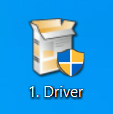
同時將 USB 線連接到此接口
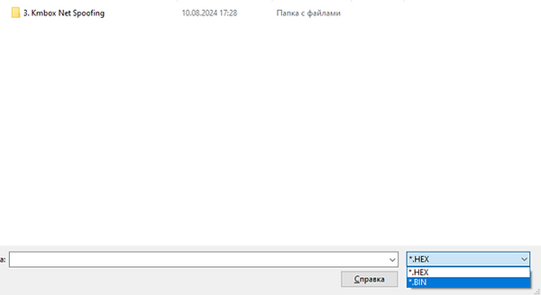
Kmbox 屏幕應該變白，藍色指示燈應該快速閃爍。如果沒有發生，請重試按住按鈕並重新連接 USB 線。
- 在主電腦上，下載並解壓升級工具，然後安裝驅動
下載升級工具：點我下載升級工具
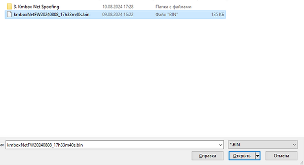
- 啟動升級工具，點擊「Search Device」。在信息行中應該顯示 "Found 1 USB devices"
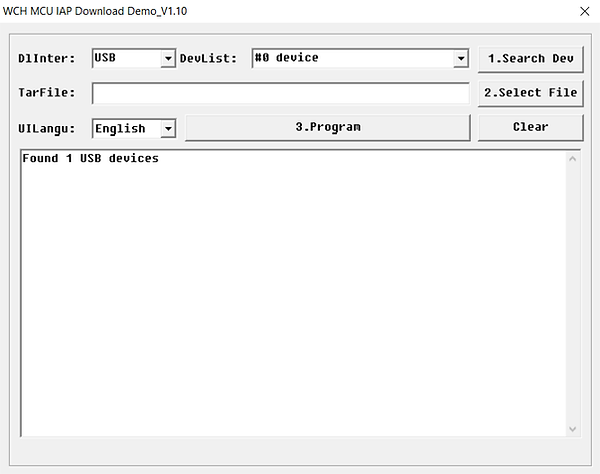
- 點擊「Select file」

- 導航到您下載固件文件的文件夾
下載固件： - 最新固件：點我下載最新固件 - 其他版本固件：點我查看歷史版本
將文件顯示類型更改為 .BIN
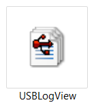
-
選擇固件文件（例如：
kmboxnetfw20240808.bin） -
點擊「Program」
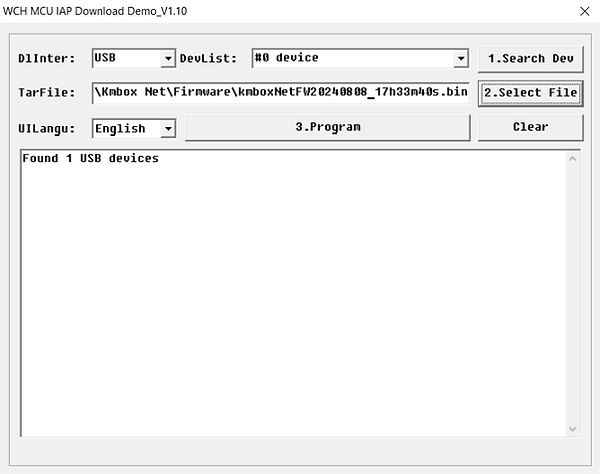
- 等待幾秒鐘。過程結束後，您會看到成功消息
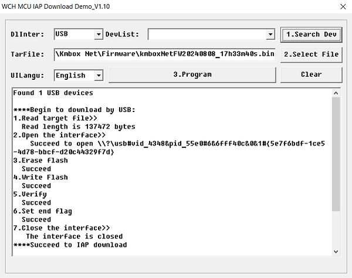
重要：固件更新完成後，必須按照下面的 Spoofing 指南進行偽裝。每次更新 Kmbox Net 固件後都必須執行此操作。
Spoofing（偽裝）Kmbox Net
Spoofing 可以讓 Kmbox Net 偽裝成您的真實鼠標，提高安全性。
Spoofing 步驟
-
斷開 Kmbox 的所有線纜和鼠標
-
將鼠標直接連接到主電腦（不使用 Kmbox）
-
在主電腦上，下載並運行
USBLogView.exe（您可以從 Kmbox Net 官方資源下載或使用 USB 設備查看工具），將程序全屏顯示
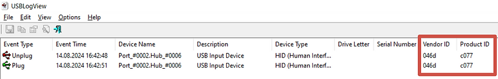
- 從主電腦拔下鼠標並重新插入
您將看到鼠標的 Vendor ID 和 Product ID
將此數據寫下來（一行，無空格）
例如：046dc077
重要：某些鼠標（例如 Steelseries Rival 3 Wireless）的 Vendor ID 和 Product ID 只包含數字，例如：10381830。在這樣的鼠標上進行 Spoofing 會失敗，建議使用其他鼠標。

- 將 Kmbox 連接到主電腦和第二台電腦
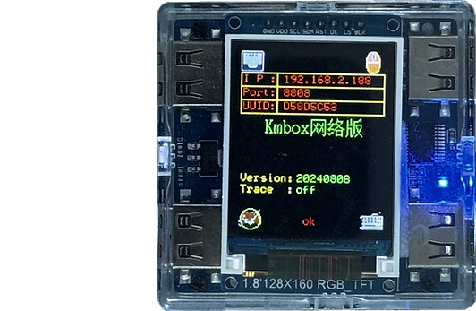
- 在第二台電腦上，下載並解壓 KmboxNet 程序
運行 KmboxNet.exe
輸入 Kmbox Net 的 IP、Port 和 UUID
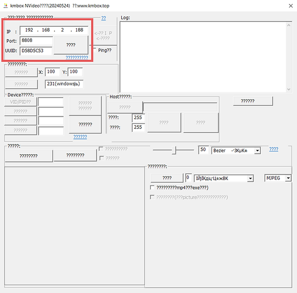
- 勾選「Ping」框並點擊大按鈕
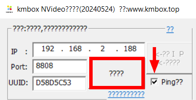
- 應該會出現一個窗口，最後寫著 OK
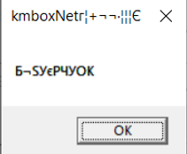
如果無法連接到 Kmbox： - 嘗試通過從主電腦拔下並重新插入來重啟它 - 以管理員身份運行 exe
- 輸入您之前保存的 Vendor ID 和 Product ID（一行，無空格，例如：
10381830）
點擊「VID/PID」按鈕
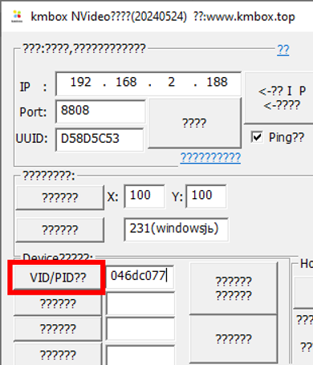
- 您應該看到一個窗口，表示過程成功
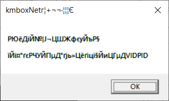
-
返回主電腦，再次打開
USBLogView.exe，將程序全屏顯示 -
從主電腦拔下 Kmbox 並重新插入
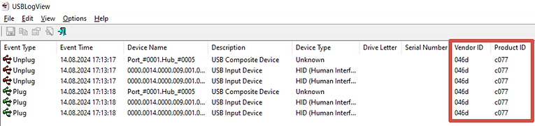
您應該看到與步驟 3 中相同的 Vendor ID 和 Product ID
如果是這樣，則 Spoofing 成功
進階設置
如何開啟 Bypass 模式
Bypass 模式允許物理鍵鼠直接通過盒子傳輸。在 Bypass 模式下，物理鍵鼠的數據會直接透傳到目標電腦，而不經過盒子的處理。
重要警告： - 此 Bypass 模式疑似是虛假的 Bypass - PID/VID 並沒有正確穿透，可能無法完全模擬真實的物理鍵鼠設備 - 在使用時請注意相關限制和風險
使用注意事項： - 在 Bypass 模式下，如果使用高速設備（High Speed, 480Mbps），可能會出現明顯不跟手、延遲大的問題 - Net 僅支持到 Full Speed (12Mbps)，如果設備是 High Speed (480Mbps)，Net 盒子只會認為它是 Full Speed - USB 協議規定：Full Speed 設備 1ms 一幀，High Speed 設備 0.125ms 一幀 - 如需完美支持透傳，請選擇速度等級更高的 NB 版本 - 如想要在 Net 上使用高速設備，請選擇 KM 模式
具體設置方法請參考 Kmbox Net 官方文檔。
如何開啟 KM 模式
KM 模式是 Kmbox Net 的工作模式之一，可在盒子上位機軟件中設置。
如何修改曲線
- 下載盒子上位機控制軟件
- 連接盒子後，可以選擇硬件曲線值和算法類型
- 默認曲線是關閉的，如需開啟請在上位機軟件中設置
檢查盒子固有參數
您可以在盒子上查看固有參數（IP、Port、UUID）：
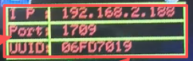
相關資源
- 官方文檔：Kmbox Net 用戶手冊
- 視頻教學：YouTube 連接教學視頻
- 網卡驅動下載：點我下載網卡驅動
- 上位機軟件下載：點我下載 KmboxNet 上位機軟件